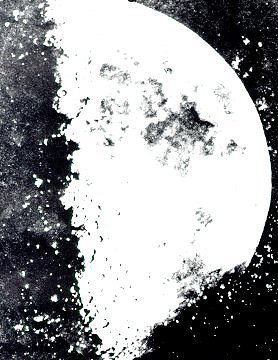
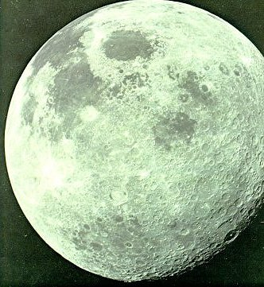
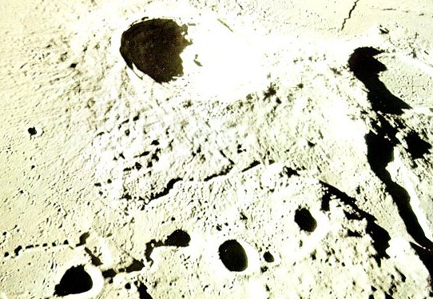
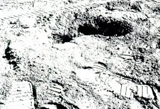
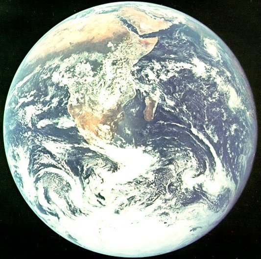
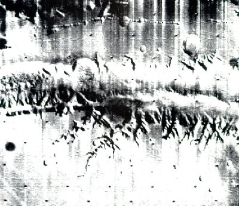
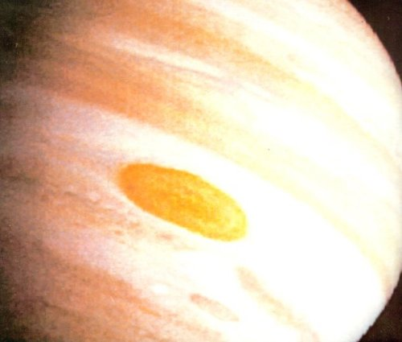
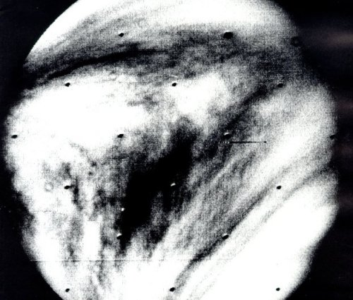
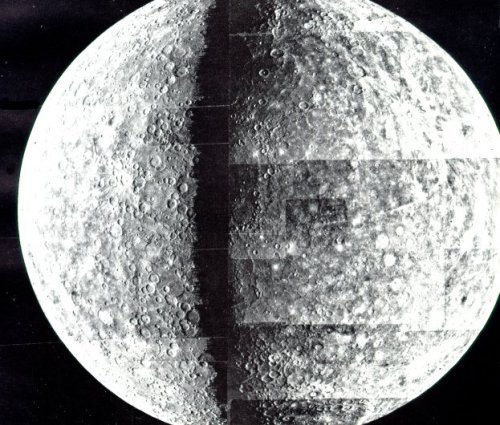
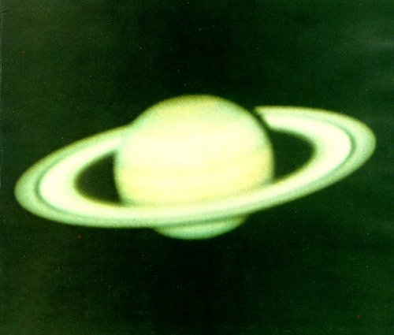

|  |
| The oldest photograph of lunar details on record. The original of this picture was a "Crystalotype" print made from a daguerreotype taken in March 1851. As in all telescopic views of the half Moon, relief features are visible only near the terminator. The remainder of the image shows only the contrast in reflectivity between the maria and the highlands. |
|  |
| Space photography over a vast range of scales is providing the raw material for many kinds of study. This view of the almost-full lunar disk was taken when Apollo 17 was about 2000 miles from the Moon on its way home. More than a third of the area covered is never visible from the Earth. Mare Smythii, the dark circular area just to the right of the center, straddles the 90' east meridian. The crater Tsiolkovsky is near the terminator at the lower right. |
|  |
| This southward-looking oblique view from an orbital altitude of 70 miles places lunar features in a new perspective. The crater in the center is Aristarchus, the brightest large crater an the Moon. It is 25 miles in diameter and 2 1/4 miles deep. The low Sun angle has brought into bald relief the deposits of ejected material, as well as the strange sinuous rilles. |
|  | When, finally, man walked the Moon, his footprints symbolized an enormous new gain in knowledge, |
|  |
| At one point on its coasting path toward the Moon, Apollo 17 lined up with the Sun and the Earth, enabling the astronauts to take this full-disk view. Since it was December, the beginning of summer in the Southern Hemisphere, the icecap that covers the Antarctic continent is brightly illuminated. A most striking feature of the visible land mass of Africa and southeastern Asia is the transition from the tawny color of the Sahara, Libyan, and Arabian deserts, through the dark band of grass-covered savannah, to the cloud-strewn tropical rain forest. |
|  |
| A complex of huge valleys and tributary canyons, now named the Valles Marineris, can be traced across 2500 miles of the Martian surface. It is comparable in scale to the Red Sea or the east African rift valley system and probably originated, like them, in the pulling part of great plates of the planetary crust. Tectonic activity of this kind marks a planet that is still evolving. The tree-like tributary canyons in the picture (a 275-mile segment of Valles Marineris) may be the result of water erosion, even though the Martian atmosphere now contains little water. |
|  |
| Cloud tops high in the atmosphere form the giant planet's visible surface. This photograph, produced from the red and blue digital images of Pioneer 11's imaging photopolarimeter, shows the characteristic banding parallel to the equator and the elongated circles that mark regions of intense vertical convective activity. Most prominent among these is the Great Red Spot, a hurricane-like group of thunderstorms that has persisted through several centuries of observation. Jupiter's weather systems are long-lived because their heat comes mainly from the planet's liquid interior. |
|  |
| Clouds in its very dense atmosphere completely hide Venus' solid surface. Although the clouds are nearly featureless at visible wavelengths, they show a wealth of detail in the near ultraviolet. This ultraviolet picture, taken by the Mariner 10 television camera, is one of a post-encounter sequence that shows the cloud-bearing atmospheric layer in retrograde (right to left) rotation with a four-day period. The swirling currents of that rotation interact with convection cells rising from the subsolar point near the left edge of the disk. |
|  |
| The surface of Mercury was revealed to science on March 29, 1974, when Mariner 10 took over 1600 television frames just before and just after flying past the planet's dark side. The left and right halves of this picture are mosaics of the pre-encounter and post-encounter frames. A second encounter, six months later, provided additional coverage. Although the crater interiors on this airless planet closely resemble those on the Moon, study of the highresolution frames shows external differences that may result from Mercury's stronger gravity field. |
|  |
| We shall have to wait a few more years for a closer view of Saturn and its rings. Pioneer 11 will encounter the planet in September 1979. Saturn is second in size only to Jupiter, with an average density less than that of water. Titan, the largest of its ten satellites, is the only one in the solar system known to have an appreciable atmosphere. Saturn's rings are thin layers of separate particles orbiting in its equatorial plane. The ring system is probably less than 60 miles thick, and its total mass is very small compared to that of Saturn's satellites. |